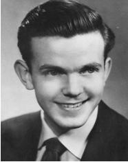
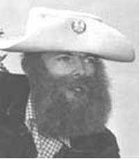
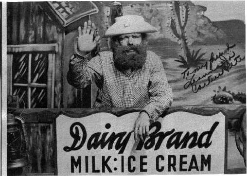

Jim Bolen.. "The First Cactus Pete"
 
Jim Bolen achieved early fame as a member of the musical group "The Jim Bolen Trio" at "The Spinning Wheel", a popular nightclub for students from Southern Illinois University in Carbondale. Jim and his trio played jazz, pre-rock and roll, and dance tunes. When WSIL television went on the air in December of 1953, Jim was on board as one of the few staff members with previous television experience. Jim had worked at various stations, including a station in Cincinnati. There, he played a character on a local kiddie show that would inspire him to create "Cactus Pete"....who went on the air that same evening in December. According to Bill Plater, who later played the Cactus Pete character, WSIL was "very fortunate" to have Jim Bolen as a staff member. He, as many others who worked there, was a versatile performer.....doing jobs that ranged from newsman to talk show host. After a few years, Bolen left WSIL to join the staff of a new television station in Iowa. He eventually wound up in St. Louis at KMOX-TV where he served as a weatherman and became a respected television personality in the area. He also continued his career in the "kiddie-show" host arena by starring as a sailor in a show called "Cookie and the Captain". Jim Bolen is now deceased, but is well remembered across Illinois and Missouri by many who watched.
